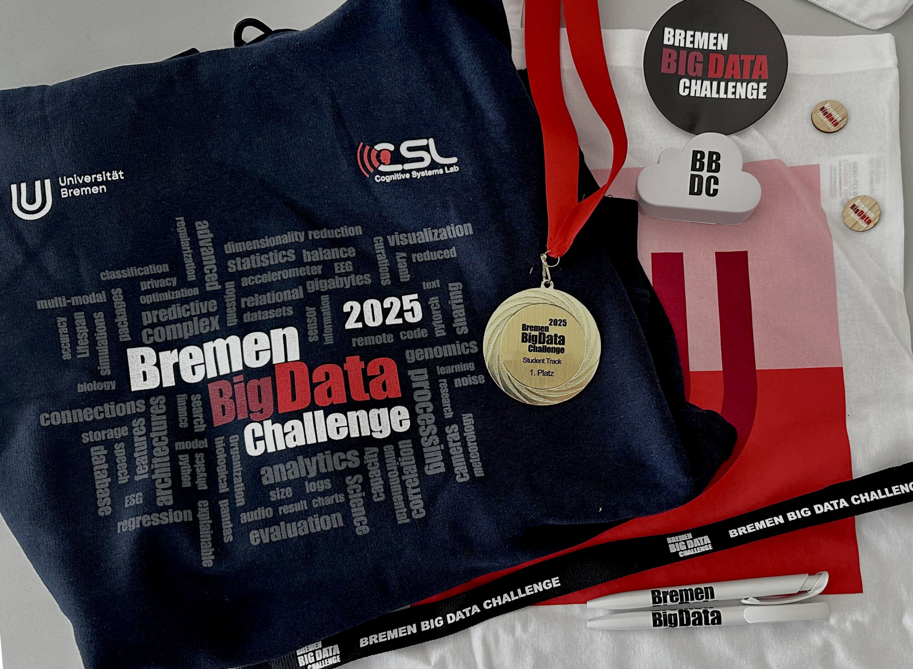
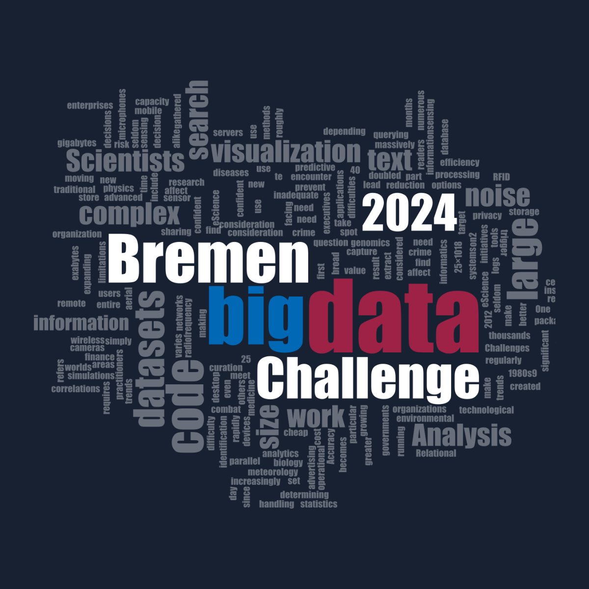
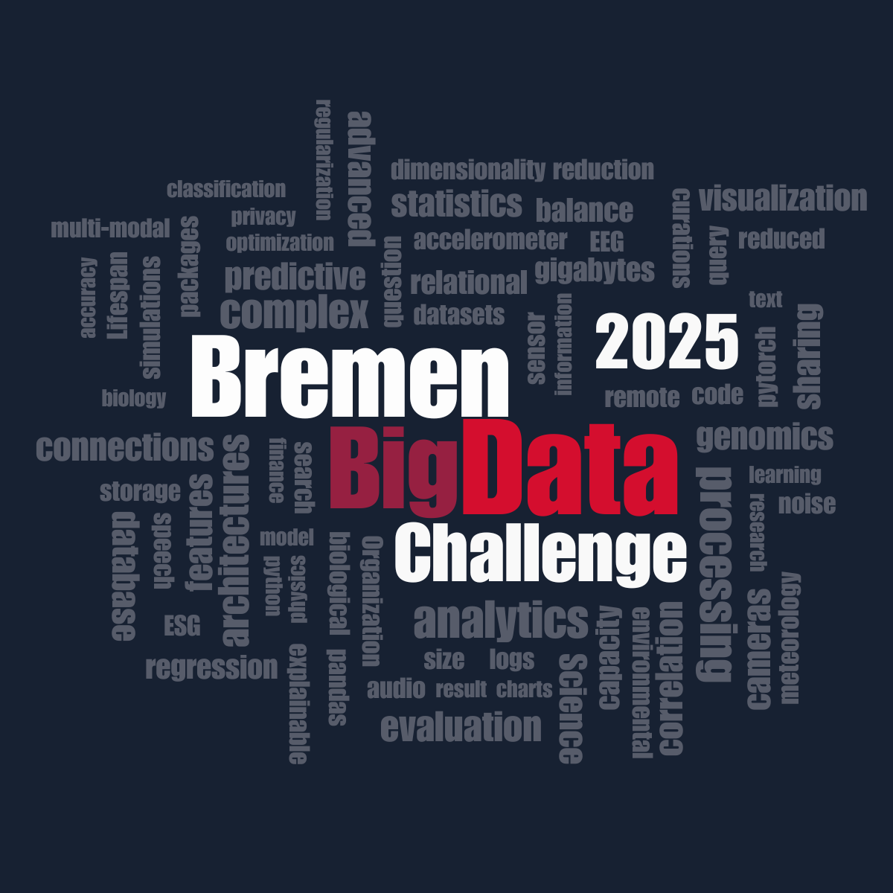

Lead UX/UI Designer
Bremen Big Data Challenge
Project Details
My Role
UX Designer & Researcher
Tools
Skills
Deliverables
- Updated logo
- Website
- Internal website
- Design system
- Handoff documentation and dev specs
Brief
The Cognitive Systems Lab wanted a complete refresh of their digital presence while preserving the recognition of their existing brand. Rather than creating an entirely new identity, the goal was to modernize the current logo and visual language. In addition, they needed a more user-friendly public website where participants could easily find important information about the competition. The project also included redesigning the internal competition platform to improve information accessibility and create a more efficient experience for users navigating competition-related resources.
Finding the Direction
To inform the redesign, I began by researching the broader landscape of other competitions and visual websites to understand current industry standards, patterns, and user expectations. My analysis gave wider organizations a sense of what felt trustworthy, modern, and accessible while identifying opportunities to improve BBDC's visibility and accessibility within the Bremen Big Data Challenge experience.
I worked closely with stakeholders and users to gain a deeper understanding of their needs, frustrations, and priorities. Through ongoing conversations with the organizing team and participants, I gathered insights into the information they considered most important and how they expected to navigate the platform.
For the public-facing website, the focus was on presenting information in a clearer and more intuitive way, making it easier for participants to find key details about the competition. For the internal competition platform, I explored more efficient methods of organizing and displaying information to better support users throughout the event process.
One of the biggest challenges in updating the logo was that stakeholders knew they wanted a refresh, but weren't entirely sure what they wanted it to look like. Through discussion, multiple design explorations, and iterative feedback sessions, I worked with the team to better understand what elements of the original identity were important to keep and where there was room for change. This collaborative process helped shape a refreshed logo that felt both familiar and more contemporary.


Old Logo
New LogoDefining the Foundation
After completing the discovery phase, I organized all of the insights gathered from stakeholder conversations, user feedback, and industry research to identify what information needed to be prioritized and how it should be presented across the website.
At this stage, it also became clear that the logo redesign should focus on evolving the existing identity rather than creating something entirely new. The goal was to retain the recognizability of the original logo while giving it a more modern and refined appearance.
I began compiling the website content and mapping out the structure of both the public-facing and internal pages. This helped define the key interactions and information hierarchy needed to ensure the experience was functional, intuitive, and easy to navigate.
By establishing these foundations early on, I was able to move into the design phase with a clear understanding of both user needs and project goals.
Structuring the Experience
With the visual direction and core website structure clarified, I focused on improving how information was presented, ensuring participants could quickly find key dates, requirements, and competition details without feeling overwhelmed. Different layout options were explored to establish a clear hierarchy and create a more intuitive browsing experience.
For the internal competition platform, the challenge was organizing large amounts of information in a way that still felt easy to navigate. I grouped content into clear pathways so participants and organizers could move confidently through the competition process.
At the same time, I worked on refreshing the Bremen Big Data Challenge identity. These ideas were developed through wireframes, prototypes, and visual exploration before being translated into the final high-fidelity designs in Figma.